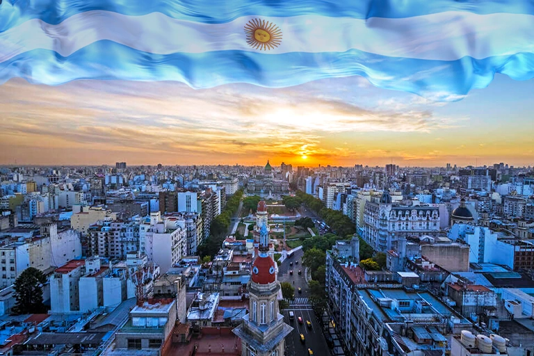

Argentina - o país do futuro!
A Argentina é um país que combina paisagens impressionantes, cidades vibrantes e uma cultura profundamente apaixonada. Do norte subtropical até as geleiras da Patagônia, cada região revela uma identidade própria, marcada por história, tradição e modernidade.

Esta é a bandeira
A bandeira da Argentina é um dos símbolos nacionais mais importantes do país e representa sua história, identidade e luta pela independência. Criada em 1812 pelo general Manuel Belgrano, ela é composta por três faixas horizontais: duas azuis nas extremidades e uma branca no centro.
No meio da faixa branca está o Sol de Mayo, um sol dourado com rosto humano que simboliza o nascimento da nação e a liberdade conquistada. As cores azul e branco são tradicionalmente associadas ao céu e às nuvens, representando esperança, união e paz.
Ao longo dos anos, a bandeira argentina tornou-se um forte símbolo de orgulho nacional, presente em momentos históricos, celebrações e na vida cotidiana do povo argentino.